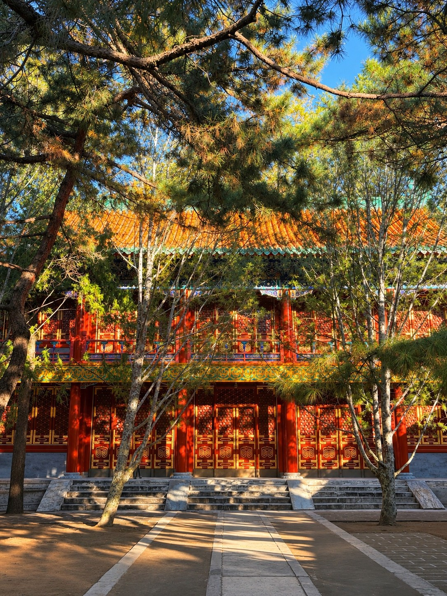

ISSUE NO. 001 · BEIJING / AUTUMN 2026
THE ART OF NOTICING
把每一刻
心动✳
留在这里.
一本可以亲手翻动的摄影杂志。
从北京的深秋出发，把四季的光、影与微小的惊喜收进纸页。
拍摄于北京 · 2026.11.10 / 05 FRAMES
 XIANGSHAN · AUTUMN
XIANGSHAN · AUTUMN
SCROLL TO WANDER ↓
39°N · A DAY TO REMEMBER
01 / THE COLLAGE STUDIO一张纸，
一张纸，
装下五次心动。
摄影不只有排列整齐的一种答案。试着拖动这些照片，把你喜欢的风景重新组合成一页自己的杂志。
THE ART OF
NOTICING
ISSUE 001 · AUTUMN
NOTICING
ISSUE 001 · AUTUMN
02 / A JOURNAL IN FOUR SEASONSMORE PAGES TO COME
Every season has its own light四季流转，
四季流转，
总有值得留下的瞬间。
秋天已经写下第一页。其余的季节，还留着空白，等以后慢慢填满。
点开任意季节，可以改变整座画廊的氛围。空白章节不会用其他人的照片填充。
THE WEATHER INSIDE THIS PAGE
让画廊，换一个季节。
落叶、雪花、花瓣与绿荫。
照片仍属于北京的秋天，氛围由你决定。
一阵风吹过，秋天落在你的屏幕上。
03 / SELECTED FRAMESCURATED WITH LOVE
The little things I noticed
五张照片，
一场很好的相遇。
有些地方是提前计划的，
有些风景是走着走着发现的。
END OF THE FIVE FRAMES✳
本地加图仅用于浏览器临时预览，不会上传服务器，也不会自动保存到 GitHub。正式加入画廊时，将图片放入仓库并更新 data/gallery.js。
SOMETHING I SAID THAT DAY / NOVEMBER 10“走着走着，
—— 一次没有提前安排的心动
A MOMENT OF FINDING BEAUTY
走着走着，
我就感觉走到这儿
应该会好看。
—— 一次没有提前安排的心动04 / THE JOURNEYA DAY IN TWO CHAPTERS
Where the light took me从山里的红，
从山里的红，
走到湖上的金。

01 — XIANGSHANCHAPTER ONE / 01香山，
✳
香山，
秋色正浓。
The colors I came for.
先走进山里，再走进阳光。树叶不约而同地变成橙色，勤政殿被枝条轻轻围住。最喜欢的那张照片，并不是刻意找来的。
CHAPTER TWO / 02颐和园，
☼
颐和园，
日落之前。
The sunset I stayed for.
原本可能错过的黄昏，最终在昆明湖边等到了。远山的剪影铺在天际，水面亮成一片温柔的橘金色。今天不用赶路了。
 02 — SUMMER PALACE
02 — SUMMER PALACE✿
05 / LETTER TO THE CITY致北京，
谢谢你把秋天留给我。
来时匆匆，走时想多看几眼。把那些不经意的相遇收好，把喜欢的光线留住。以后翻开这里，山里的枫叶还会落下来，湖上的夕阳也还在。
The colors I came for. The sunset I stayed for.
Beijing, November 2026♡ ALWAYS IN FRAMES